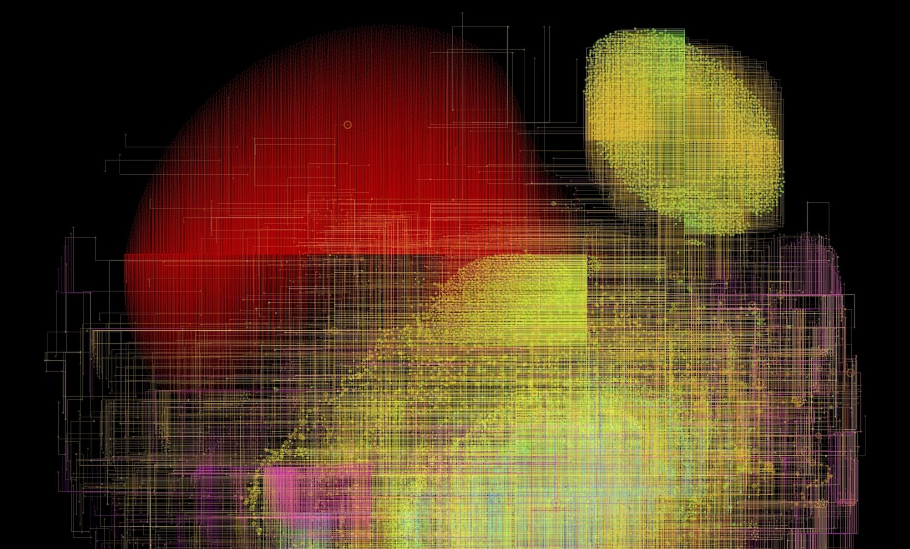

Collector Site
Takens 🏠 | Curious Circuits on OpenSea
Mass circuits. The GENESIS wallets did not sit still. Connection quickly extended beyond the first distribution, activity clustered here and there, mixing ether into new places, new hubs, exchanges, mysterious places. "Curious Circuits" mines a history using visuals from raw chain data, millions of tidbits rendered as curious circuits. Issuance: There will be 12 curious circuits. JPEGs stored on Arweave, brief descriptions in each piece. First collectors receive an interactive interface allowing the owner to explore the early ecosystem's circuitry.